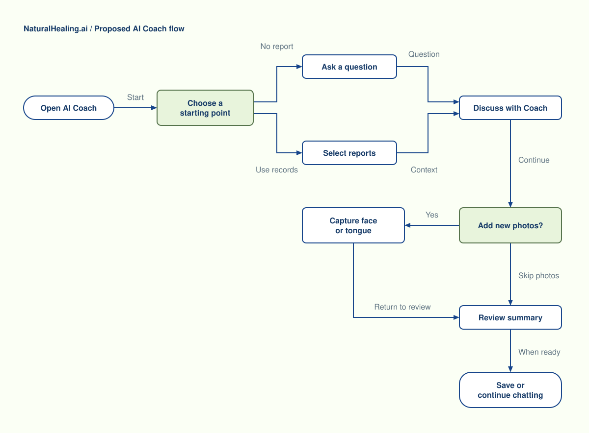
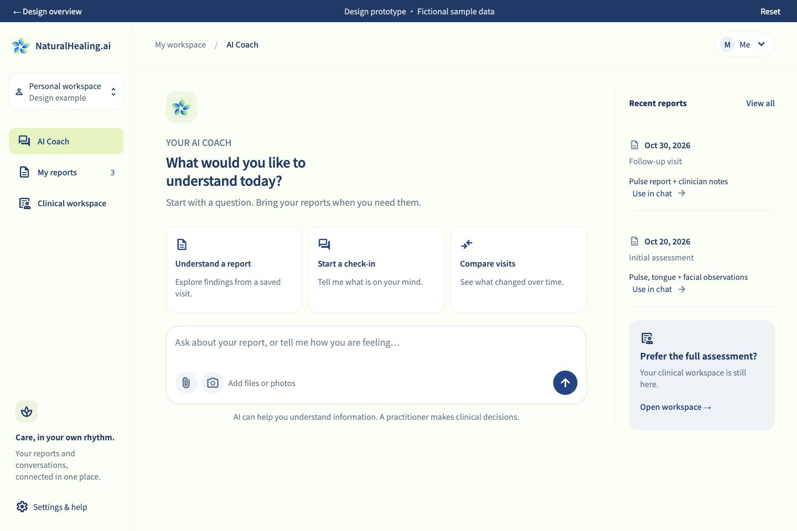
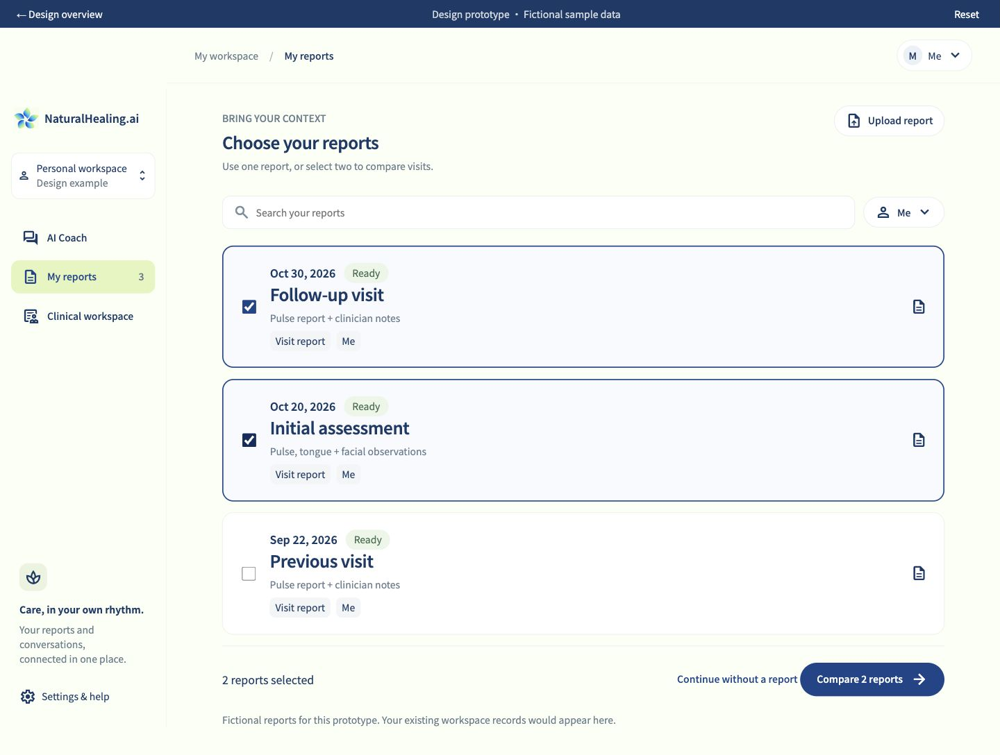
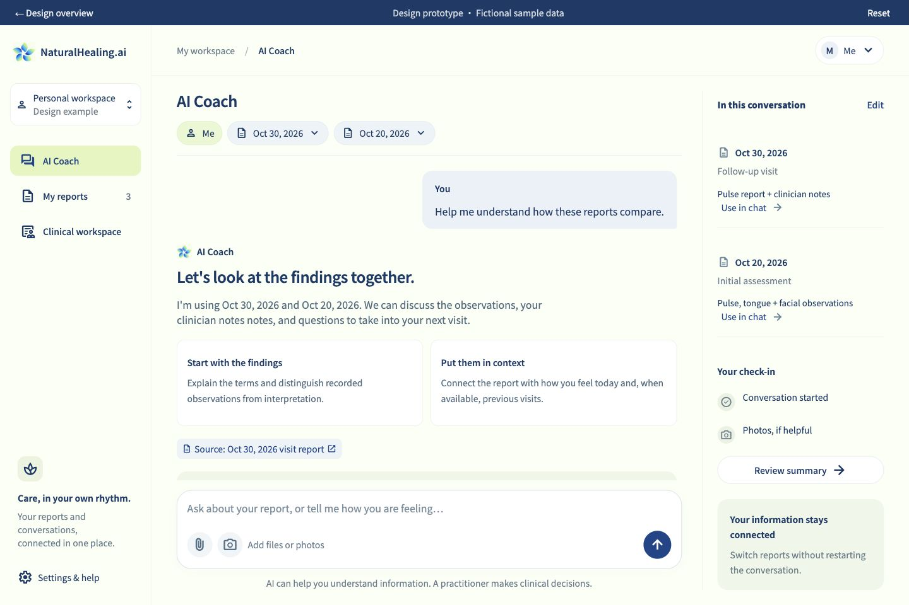
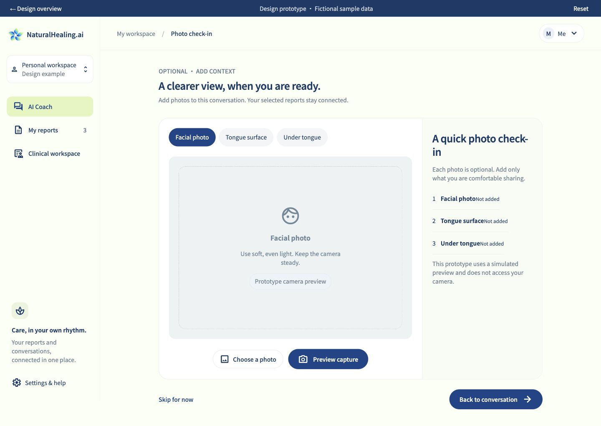
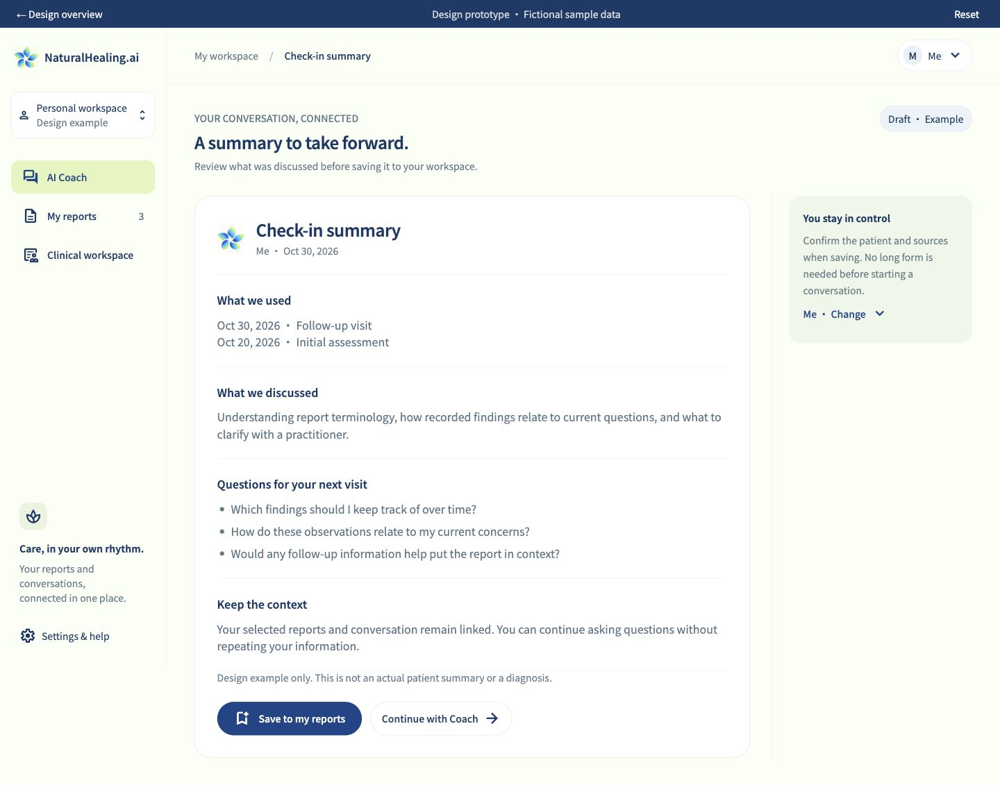
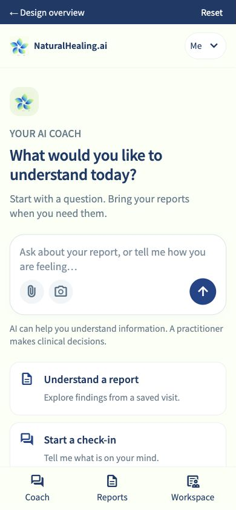
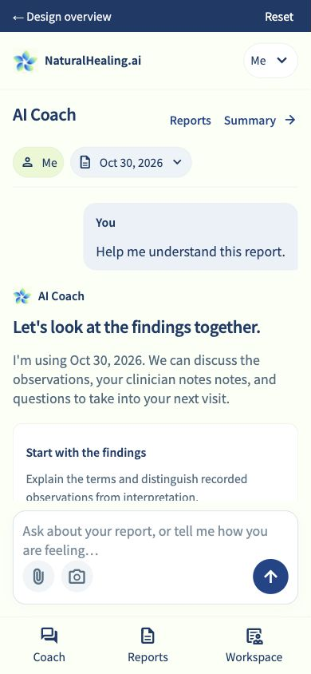

从一段对话开始，
而不是从一张长表单开始。
让 AI Coach 成为工作空间的直接入口。已有报告随时调用，需要新信息时再补拍照片；患者资料复用，最后确认保存。
打开可点击原型 →先看交互流程独立设计原型 · 英文界面 · 全部为虚构示例 · 不影响线上网站
不强制先做完整评估
直接提问、解释已有报告、比较两次记录，三个自然入口。
患者与报告始终明确
日期与患者留在对话上方。回答关联来源，避免“选了但没读”的模糊状态。
照片是对话的一部分
需要时再补拍脸、舌面、舌下，可跳过；结束时再保存总结。
建议的流程
填写信息 → 上传报告 → 拍照 → 分析 → 最后看报告
打开 Coach → 提问或选报告 → 对话中补资料 → 回顾并保存

照片与生成总结都不阻断普通对话。流程图的 Review summary 表示用户准备好时的回顾入口。下载 SVG 流程图

进入后，先看到可以做什么
输入框和三个清晰入口：解释报告、日常提问、比较历史。右侧显示最近报告，点击就能带入对话。

选择报告，替代重复填资料
患者与日期明确展示。单选用于解读，多选用于对比；已有患者信息直接复用，新增资料只在必要时补。

让对话成为主画面
顶部保留当前患者和报告，右侧是资料上下文，底部输入框固定。照片邀请嵌入对话，而不是跳进另一个长流程。

需要的时候，再补拍照片
面部、舌面、舌下分开引导，状态一目了然。可以补拍一张，也可以直接跳过，回到原对话。

最后回顾，而不是重新开始
总结保留所用报告、讨论内容和后续问题。点击保存时才确认患者；也可以继续跟 Coach 聊，不强制结束。

手机端：把空间还给对话
侧栏收起为底部导航。首屏优先显示输入框，报告日期保留在对话上方，长内容在消息区滚动。

可以直接开始聊天，不必先上传报告。

报告可见，输入框保持在底部。
这次重点改变的是顺序
原来的完整临床评估入口保留；AI Coach 增加一种更轻的使用方式。
有报告：选择记录 → 直接提问。
无报告：先聊 → 有需要再补资料。
做复诊：选择多份报告 → 对比变化。
如何试这个原型
- 点击 Understand a report，选一份或两份报告，进入对话。
- 点击 Add photos，预览一张照片，然后返回对话。
- 点击 Review summary（手机为 Summary），试一下保存与继续聊天。
- 点击左上角 Reset，再直接输入问题，体验不选报告的路径。
实现时需要保证
- 以当前登录工作空间的患者和真实报告替换示例列表；患者切换后清空不属于该患者的报告选择。
- 选择报告后先读取内容，显示“读取中 / 已读取 / 读取失败”；只有确认拿到内容，回答才能显示来源。
- 回答引用具体报告与日期。内容缺失时明确指出缺失部分，不把列表摘要当成完整 PDF。
- 照片补拍、上传知识库、历史报告是可追加的上下文，不是开始聊天的门槛。
- 总结可保存为讨论记录；完整诊疗仍由原来的临床流程与执业人员确认。
范围与验证
这是一套交互与排版原型，不调用模型、不读取真实患者资料、不打开摄像头、不保存到账号。上传、拍照与保存均为模拟。独立文件夹保存，未修改或发布现有网站。
已检查电脑 1440px、手机 390px，并检查 320px 窄屏无横向溢出；已点通选报告、对话、补拍、回顾、保存确认和无报告直接提问。
沿用的视觉语言
象牙白底、深蓝文字与按钮、浅绿选中态、小花标识。用 16px 正文、14px 辅助文字、24px 标题与清晰的间距建立层级。
流程图使用深蓝文字 #173B68、象牙白底 #FBFFF5、主蓝 #17458B、灰蓝 #607482、绿 #56734C；已检查节点文字与边界，连接线带有文字说明。图中 Continue 为“继续当前对话”，Capture face or tongue 为“按需补拍面部、舌面或舌下”。